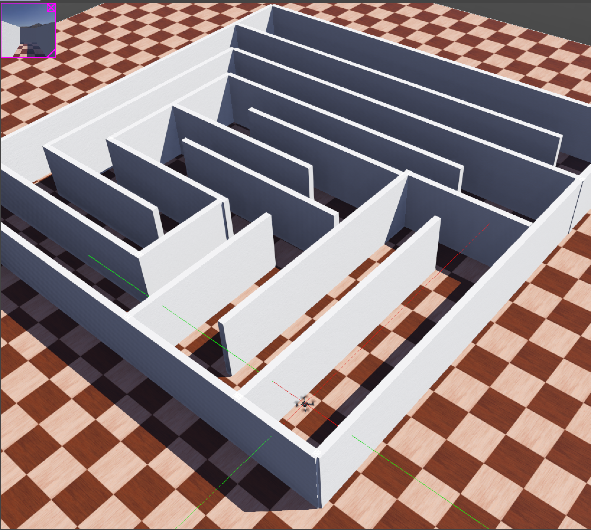

Webots simulator for a drone to navigate a maze.
Webots simulator: maze on a target.
3D Printed Target
Classifier Result: 99.85% accuracy
.png)
Custom datasets
.png)
In this work, we present the design and simulation of an autonomous aerial search-and-rescue system using a Crazyflie 2.1 drone, Multiranger LIDAR deck, Flow deck, onboard IMU, and monocular camera. We developed and tested a complex indoor maze world in Webots, real-time sensor fusion for obstacle detection and localization, and demonstrated collision-free navigation to a target "survivor" in narrow corridors. Some of the most significant accomplishments include robust LIDAR-based wall avoidance, stable attitude control using IMU integration, and reliable target recognition in simulation. These accomplishments set a good basis for future use in actual disaster scenarios.
This project demonstrates a fully autonomous indoor navigation system designed for search-and-rescue scenarios using the compact Crazyflie 2.1 drone. The system integrates LIDAR, IMU, and vision-based sensing with a custom PID-controlled state machine for collision-free maze navigation and static target detection.